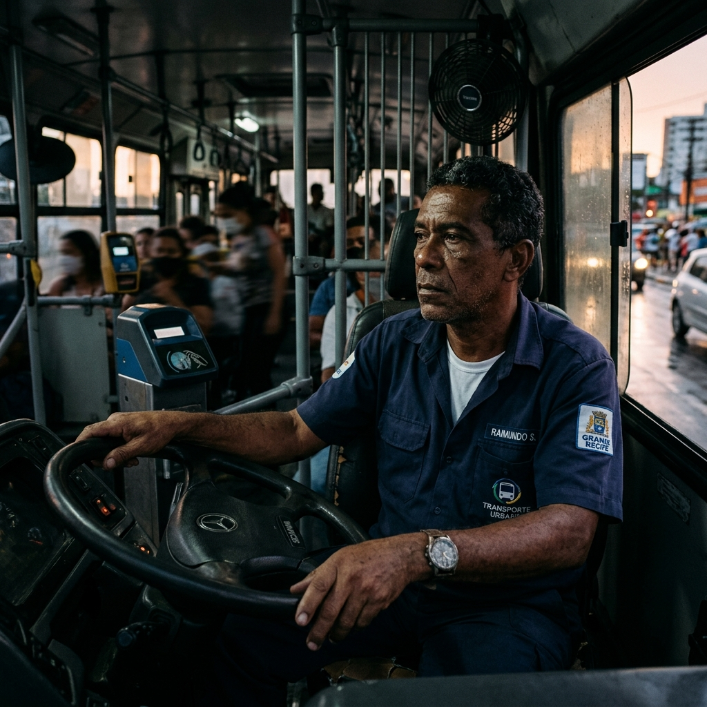

Justiça para quem move o Brasil
Defesa técnica de motoristas e cobradores. Atuação em dobra/T.U, descontos indevidos no contracheque, acúmulo de função e rescisão indireta, sempre com rigor processual e sigilo.

Jornadas abusivas com dobras de turno intermináveis, escalas desumanas de Tabela Única (T.U), motoristas sendo obrigados a cobrar passagens e descontos injustos de Sodexo, multas e avarias no contracheque. A rotina do rodoviário é exaustiva e cercada de injustiças.
A advocacia trabalhista do Dr. Bruno Vianna age de forma implacável e estratégica para reverter esses abusos. Nós cobramos na Justiça o que é seu por direito: horas extras de dobras não computadas, a restituição de descontos ilegais, o acréscimo salarial por dupla função e a rescisão indireta em casos de condições degradantes.
Atuação dedicada ao rodoviário — motoristas e cobradores — em todo o Rio de Janeiro, com base na CLT e na Lei 13.103/2015 (Lei do Motorista).
Análise de dobra de turno, Tabela Única, supressão de intervalo intra e inter jornadas, adicional noturno e tempo de abertura e fechamento da guia não computados na jornada.
Revisão de descontos a título de Sodexo, Vale Filmagem, sinistro, avaria de veículo e multas de trânsito — rubricas que, em regra, não podem recair sobre o salário do rodoviário.
Defesa do motorista que faz dupla função, do fiscal que atua como despachante e do motorista júnior conduzindo veículo convencional sem a devida contraprestação salarial.
Atuação em pedido de demissão forçado, revisão de acordo trabalhista lesivo e condições degradantes, como a ausência de banheiros nos pontos finais, em busca da devida reparação.
O Dr. Bruno Vianna explica, de forma clara e descomplicada, as dúvidas mais frequentes dos rodoviários e seus principais direitos garantidos por lei.
Apresentação do escritório Viana Associados e do nosso compromisso diário em lutar pela categoria.
Saiba quando a justa causa aplicada pela empresa é indevida e como reverter a punição na Justiça do Trabalho.
Uma explicação detalhada diretamente para o rodoviário sobre quais verbas e direitos são cobrados na ação judicial.
Descubra como sair do emprego garantindo todas as suas verbas rescisórias quando o empregador comete faltas graves.
Defensor incansável da classe trabalhadora rodoviária. O Dr. Bruno Vianna lidera uma advocacia altamente especializada e focada na proteção dos direitos de motoristas e cobradores de ônibus.
Com ampla vivência prática e domínio das peculiaridades do cotidiano rodoviário, desde a pressão nas garagens até o controle de guias e dupla função, ele aplica a CLT e a Lei do Motorista (Lei 13.103/2015) com extremo rigor processual e de forma estritamente transparente.
O escritório atua de ponta a ponta no Rio de Janeiro, combatendo descontos indevidos no contracheque, cobrando horas extras decorrentes de dobra e tabela única (T.U) e revertendo pedidos de demissão forçados através da rescisão indireta do contrato de trabalho.
.webp)
Passo a passo simplificado para defender seus direitos.
Agende sua orientação via WhatsApp ou formulário.
Nossa equipe estuda a viabilidade jurídica do seu pedido.
Definição da melhor abordagem legal para sua situação.
Início do processo ou negociação extrajudicial.
Esclarecimentos sobre descontos indevidos, dobra/T.U, acúmulo de função e rescisão indireta. Apresentamos uma orientação geral, sem qualquer promessa de resultado.
Preencha o formulário abaixo e entraremos em contato o mais breve possível.
Endereço
R. Amaral Costa, 508 - Campo Grande
Rio de Janeiro - RJ,
23050-260
Telefones
(21) 98266-2305
Horário de Atendimento
Segunda a Sexta
09h às 17h